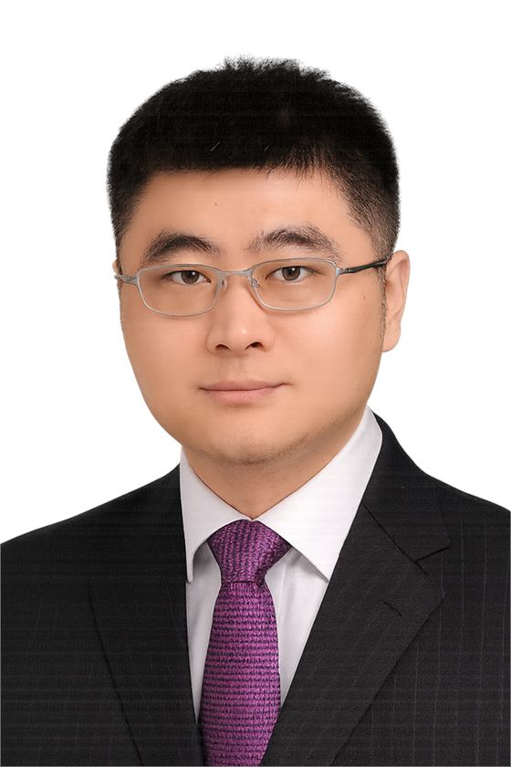

Professor, College of Life Sciences, Wuhan University
Prof. Xing-Hua Zhang develops single-molecule technologies and DNA mechanical probes to study DNA, RNA, RNA-DNA hybrids, cell mechanobiology, clinical genotyping, and genome stability under epigenetic regulation.
His work combines single-molecule magnetic tweezers, single-molecule fluorescence, biochemical assays, and molecular dynamics simulations to reveal how nucleic-acid mechanics, ions, proteins, and chemical modifications regulate molecular structure and biological function.